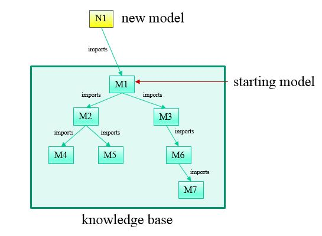

Traditionally knowledge has been captured in some kind of knowledge development interface which is akin to an integrated development environment (IDE) for software development. For example, the SADL IDE is a knowledge capture or knowledge development interface. Usually such an interface is not well-suited to fielding the knowledge base in the environment in which it is useful either as part of a software solution or as a decision support tool to people working to solve problems. For delivery, the knowledge base is often more usefully exposed through some kind of programmatic interface in which specific scenario data is passed to a knowledge service, inference is perhaps performed, and questions are asked to expose both the knowledge, the scenario data, and the inferences drawn for this particular scenario.
The knowledge services provided by the Knowledge Server are divided into three levels of service: 1) basic scenario data push, query pull, 2) basic plus the ability to make modifications to the knowledge base and persist both knowledge base changes and data pushed (persist and edit, PE), and 3) basic plus PE plus a number of convenience methods that facilitate model-driven (MD) applications.
The names of the knowledge server Java Interface classes for each level of service is shown in the table below.
Java API Basic push, query ISadlServer Persiste and Edit ISadlServerPE Model-Driven ISadlServerMD
This document provides information and links to more detailed information for the services provided by each of these three classes. Each class in the table is linked to the JavaDoc documentation for that class. Complete JavaDoc for the knowledge server Java API is available at Java API classes.
The first step is to create an instance of a class implementing ISadlServer, e.g., SadlServerImpl. This is done with a Java statement of the form:
ISadlServer srvr = new SadlServerImpl( );
Next the server must be initialized by setting the folder on the file system that is the kbase root folder, meaning all kbases are located under this folder. This can be done by calling setKbaseRoot:
srvr.setKbaseRoot("c:/someuser/kbaseroot");
Note that this could have been done in a single call by passing the kbase root to the constructor:
ISadlServer srvr = new SadlServerImpl( "c:/someuser/kbaseroot");
Once an instance of a class implementing ISadlServer has been created an initialized, subsequent method calls can occur in any order. Functionalities of potential interest are described in this section.
A Knowledge Server knowledge base consists of a set of OWL models. An OWL model consists of a set of RDF triples. Scenario-specific information can be added to a knowledge base by adding RDF triples to the knowledge base. There are multiple ways that data can be added to the server's knowledge base. Note that the services defined by ISadlserver only allow adding data for the current server session; the data is not persisted on the server.
String newInstanceURI = srvr.createInstance("http://some/scenario/namespace/uri#newInstanceName", "http://some/kbase/namespace/uri#ExistingClassName");
An RDF triple consists of a subject, a property (or predicate), and a value. The value can be a literal if the property is an owl:DatatypeProperty, or it can be a URI if the property is an owl:ObjectProperty (see https://www.w3.org/TR/2004/REC-owl-guide-20040210/#SimpleProperties). Thus for an owl:DatatypePropety one might have this call:
boolean status = srvr.addTriple("http://some/uri#subjectInstanceName", "http://some/kbase/uri#someDatatypePropertyName", 23.56);
For an owl:ObjectProperty, one would make this call:
boolean status = srvr.addTriple("http://some/uri#subjectInstanceName", "http://some/kbase/uri#someObjectPropertyName", "http://some/uri#objectInstanceName");
SPARQL is a W3C graph query language. SPARQL 1.1 includes update capability. The ISadlServer interface includes a method to insert triples into and/or delete triples from the server session's knowledge base using an update statement.
srvr.query("delete {?person <foaf:givenName> 'Bill'} insert {?person <foaf:givenName> 'William'} where {?person <foaf:givenName> 'Bill'}");
Data can be loaded into the knowledge base from a file containing RDF triples in several standard formats, e.g., XML, Notation3 (N3), N-Triples (see https://en.wikipedia.org/wiki/Resource_Description_Framework#Serialization_formats). The caveat is that the file designation is on the server's file system and must be known by the client.
boolean status = srvr.loadData("file:///c:/tmp/instdata1.owl");
With the additional information provided by a template file, RDF triples can also be added to the session kbase from a CSV file. Once again, file paths are on the server file system and must be known to the client.
boolean status = srvr.loadCsvData(file:///c:/tmp/instdata1.csv", true, "file:///c:/kbases/mykbase/mytemplate.tmpl");
The 3rd argument could be a URL or it could be an actual template as a String.
If a file on the client file system contains RDF triples, the data can be sent to the server using the class javax.activation.DataSource or one of its subclasses.
DataSource fdsrc = new FileDataSource(file:///c:/tmp/instdata1.owl);
boolean status = srvr.sendData(fdsrc);
A client-side CSV file can also be sent, along with a template, to add triples to a session's knowledge base.
DataSource fdsrc = new FileDataSource(file:///c:/tmp/instdata1.csv);
boolean status = srvr.sendCsvData(fdsrc, true, "file:///c:/kbases/mykbase/mytemplate.tmpl");
In this case the 3rd argument could be an URL or it could be the actual template as a String.
There are two basic methods provided for retrieving information from a KnowledgeServer model, whether the information is assertions (input data) or inferences.
The "ask" method takes a triple pattern, subject, predicate, object, as input arguments and returns a ResultSet containing all model data matching the pattern. Any combination of the three arguments can be null, which creates an unbound variable in that position of the triple pattern. The number of columns in the returned ResultSet is the same as the number of null arguments. If all arguments are non-null, the return will be true if the triple exists in the kbase else false.
The "query" method takes a SPARQL query string as an input argument and returns a ResultSet containing all model data satisfying the query conditions.
Note that if the query string is a parameterized query, meaning that it has one or more standalone question marks (just a "?" without a variable name, e.g., not "?x"), then a call should be made to the method "parameterizeQuery(String queryStr, List<Object> values)" to process the parameterized query and return the resulting query string for use in the call to the "query" method.
The extended services of ISadlServerPE allow both changes to existing model files in the knowledge base and the addition of new model files. Consider the knowledge base depicted in the figure below.

The models M1 through M7 are existing models within the knowledge base represented by the green rectangle. When the service is invoked, either directly or through a named service, a knowledge base and a model in the knowledge base are specified. This "starting" model is indicated in the figure. The methods of ISadlServerPE allow modification of any of the existing models. They also allows the creation of one or more additional models such as N1 in the figure. Furthermore, any changed, both to existing and to new models may be persisted. Note that new models such as N1 are assumed to import the starting model, tying them into the existing knowledge base. Other imports can be added explicitly if needed.
There are a number of methods in ISadlServerPE that are similar to methods in ISadlServer except that an additional first argument is added to indicate to which model the operation is to be applied. For example, in ISadlServer we find the method
addTriple(subjectUri, predicateUri, value) // add this triple to the default model
but in ISadlServerPE we find the method
addTriple(modelName, subjectUri, predicateUri, value) // add this triple to the specified model
Of course if the default model is the same as that identified by "modelName", the operations will be identical.
Methods with counterparts in ISadlServer include the following. See JavaDocs for details.
ISadlServerPE provides the following methods to edit and persist changes. See JavaDocs for details.
boolean
boolean
boolean
boolean
boolean
Methods support adding all-values-from, some-values-from, has-value, and cardinality restrictions. These methods are the following. See JavaDocs for details.
boolean
addAllValuesFromRestriction(String modelName, String className, String propertyName, String restrictionName)boolean
addCardinalityRestriction(String modelName, String className, String propertyName, int cardValue)boolean
addQualifiedCardinalityRestriction(String modelName, String className, String propertyName, int cardValue, String restrictedToType)boolean
addHasValueRestriction(String modelName, String className, String propertyName, String valueInstanceName)boolean
addMaxCardinalityRestriction(String modelName, String className, String propertyName, int cardValue)boolean
addMaxQualifiedCardinalityRestriction(String modelName, String className, String propertyName, int cardValue, String restrictedToType)boolean
addMinCardinalityRestriction(String modelName, String className, String propertyName, int cardValue)boolean
addMinQualifiedCardinalityRestriction(String modelName, String className, String propertyName, int cardValue, String restrictedToType)boolean
addSomeValuesFromRestriction(String modelName, String className, String propertyName, String restrictionName)Not yet documented here.